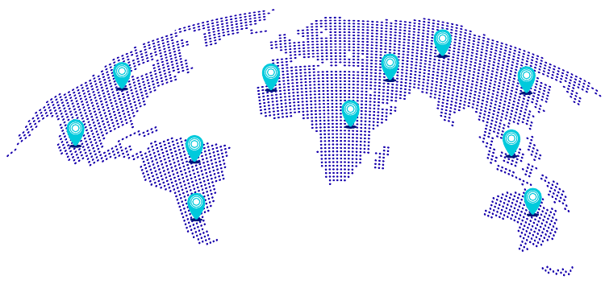
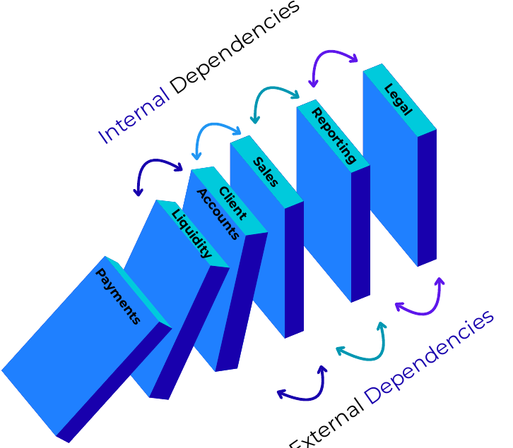

מה VitalCap עושה
VitalCap הופכת תוכניות רציפות עסקית ממסמכים סטטיים למערכת חיה שמחשבת השפעה, מזהה תלויות ומציעה פעולות התאוששות.

תכנון רציפות עסקית מבוסס AI
תכנון רציפות חי שמחבר תהליכים עסקיים, קריטיות כוח אדם, תלויות באפליקציות ואיומים לפי מיקום.
על VitalCap
VitalCap הופכת תוכניות רציפות עסקית ממסמכים סטטיים למערכת חיה שמחשבת השפעה, מזהה תלויות ומציעה פעולות התאוששות.
הפתרון מיועד לצוותי רציפות, סיכונים ותפעול שצריכים להבין במהירות אילו תהליכים, ספקים ואפליקציות עלולים לעצור את העסק.
המערכת משלבת RTO, RPO, MAD, קריטיות עובדים ואותות איומים כדי לעזור לצוותים לתעדף תגובה לפני שהשיבוש מתרחב.
היכרות
אוריה ברנס היא מקצוענית בתחומי אבטחה וניהול סיכונים, עם התמחות ברציפות עסקית ובהתאוששות מאסון. עבודתה כוללת תיאום רציפות, הגנת תשתיות ותכנון חוסן מעשי.
VitalCap הופכת את הדיסציפלינה הזו לתהליך SaaS חי עבור ארגונים שצריכים שתוכניות הרציפות שלהם יישארו עדכניות לפני משבר.
סימולטור
ציון התרחיש
0 מחשבתלות הקשר התרחיש יופיע כאן.
הריצו את הסימולטור כדי לחשב נתיב תגובה.
אפקט דומינו
פלטפורמה
מתאמי רציפות אוספים ידנית נתוני כוח אדם, תהליכים, אפליקציות וצדדים שלישיים.
מחלקות מתעדכנות בקצבים שונים, מה שיוצר עיכובים ותלויות חסרות.
תוכניות רבות מפספסות איומים ייחודיים לארגון ולשלוחה.
מסמכי BCP מתעדכנים אחרי משבר או ביקורת, במקום באופן רציף.
מחבר את נתוני הליבה הדרושים ליצירת תוכניות רציפות מוכנות להתאוששות.
משתמש ב-MAD, RTO, RPO ובקריטיות אפליקציות כדי לדרג השפעה עסקית.
מנתח איומים בזמן אמת על נקודות כשל יחידות באמצעות אותות ממקורות פתוחים.
ממליץ על פעולות לפי משאבים, יכולות, תלויות וענף פעילות.
הזדמנות שוק
פתרונות לניהול רציפות עסקית צפויים לצמוח ב-1.17 מיליארד דולר בין 2024 ל-2028, בעקבות הביקוש לחוסן חזק יותר וליציבות תפעולית בענפים שונים.
תהליך עבודה

פלט לדוגמה
מחשבון סיכון
ניתוח סיכונים ואיומים
VitalCap יכולה לזהות אירועים אזוריים, חשיפה של ספקים, תלויות באפליקציות וקריטיות ברמת צוות לפני שהם הופכים לכשלי רציפות.
פיד איומים חי
סורק את אזור שיבויה מנטר אותות סייסמיים, ספקים ותלויות אפליקציה.מודל שפה מנטר איומים פעילים ליד שיבויה, יפן.
נתוני ספקים מזהים חשיפה של מטה CyberAgent.
תלויות העברת תשלומי מכירות מחוברות ל-CyberAgent.
VitalCap מזהירה את הצוות שספי RTO, RPO ו-MAD נמצאים בסיכון.
המלצות התאוששות
שכבת ההמלצות הופכת חישובי סיכון לצעדים תפעוליים: תקשורת, הפעלת גיבויים, ספקים חלופיים ומחזורי בדיקה.
| תוכנית זמן | סיכון לקוחות | משפטי | פעולה |
|---|---|---|---|
| 2 שעות | 4 | 8 | גיבוי נתוני מכירות ושליחת תקשורת ללקוחות. |
| 4 שעות | 4 | 8 | מעבר לפלטפורמות מכירה חלופיות והפעלת ספקים לטווח קצר. |
| 24 שעות | 4 | 8 | יישום צעדי תמיכת לקוחות זמניים עם צוות ייעודי. |
| 48 שעות | 4 | 8 | סקירת תוצאות בדיקה והתאמת אסטרטגיות רציפות. |
ערך ייחודי
VitalCap מסתגלת באופן דינמי לאיומים מתפתחים, כדי שארגונים יוכלו להתאים מראש תוכניות רציפות, לצמצם חשיפה ולחזק חוסן.